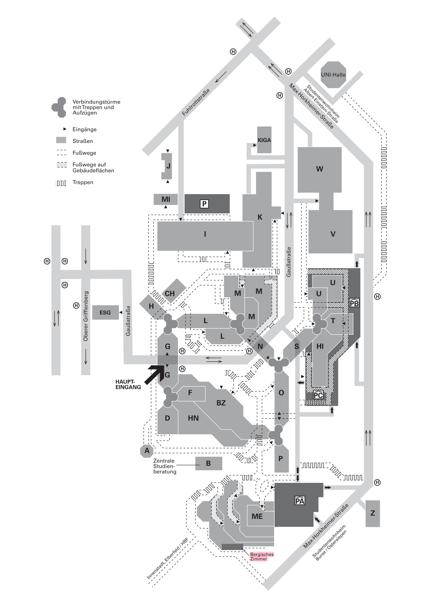

Anreise & Unterkunft
Bergische Universität Wuppertal · 02.–04. September 2026
Praktische Hinweise zu Anreise, Tagungsort und Unterkunft, zusammengestellt vom Organisationsteam.
Tagungsort
Die Tagung findet an der Bergischen Universität Wuppertal, Campus Grifflenberg, in Wuppertal-Elberfeld statt. Tagungsraum ist das Bergische Zimmer im Gebäude ME des Studierendenwerks Wuppertal. Der Campus liegt oberhalb von Elberfeld, wenige Kilometer vom Hauptbahnhof entfernt.
- Tagungsraum Bergisches Zimmer, Gebäude ME, Ebene 02
- Anschrift Studierendenwerk Wuppertal, Max-Horkheimer-Straße 15, 42119 Wuppertal
- Lageplan Campus Grifflenberg: Lageplan & Anfahrt (Uni Wuppertal)

Anreise mit dem Flugzeug
Wuppertal liegt zentral im Rhein-Ruhr-Gebiet und ist von mehreren Flughäfen per Bahn erreichbar.
Düsseldorf (DUS), empfohlen
Nächster Flughafen. Vom Flughafen mit S-Bahn oder Regionalbahn zum Düsseldorfer Hauptbahnhof, von dort mit RE 4, RE 13, S 8 oder S 28 weiter nach Wuppertal Hauptbahnhof. Ein Teil der Verbindungen fährt bereits ab Bahnhof Düsseldorf Flughafen ohne Umstieg. Fahrzeit insgesamt rund 45 Minuten.
Köln/Bonn (CGN), Alternative
Ab Köln Hauptbahnhof mit RE 7 oder RB 48 nach Wuppertal, ab Flughafen je nach Verbindung mit einem Umstieg.
Dortmund (DTM), Alternative
Ab Dortmund Hauptbahnhof mit RE 4 oder RE 13 nach Wuppertal.
Fernflüge
Für Interkontinentalflüge ohne Anbindung an DUS oder CGN bietet sich Frankfurt (FRA) mit anschließender ICE-Fahrt nach Wuppertal Hauptbahnhof an. Wuppertal liegt an der ICE-Strecke Köln–Dortmund.
Vom Hauptbahnhof zum Campus
Wuppertal Hauptbahnhof (Elberfeld) ist der zentrale Ankunftspunkt. Zum Campus Grifflenberg fahren die Buslinien 615 (Richtung Neuenkamp/Stadtwerke, Remscheid) und 645 (Richtung Schulzentrum Süd) sowie der Uni-Express E500. Für das Bergische Zimmer ist die Haltestelle Mensa am günstigsten. Die Fahrzeit vom Hauptbahnhof zum Campus beträgt etwa 10 bis 15 Minuten.
Wuppertals Wahrzeichen, die Schwebebahn, verbindet das Stadttal entlang der Wupper und ist die schnellste Verbindung zwischen den Stadtteilen. Zum Campus selbst braucht man aber den Bus.
Taxi
Bei später Ankunft, schwerem Gepäck oder eingeschränkter Mobilität ist ein Taxi vom Hauptbahnhof zum Campus oder zum Hotel sinnvoll. Als Zieladresse möglichst Max-Horkheimer-Straße 15, 42119 Wuppertal angeben.
Tickets
Fahrscheine gelten im VRR-Tarif für Bus und Schwebebahn. Für kurze Aufenthalte eignen sich das EinzelTicket oder das 24-Stunden-Ticket der WSW. Das Deutschlandticket gilt in Wuppertal ebenfalls, auch in der Schwebebahn. Aktuelle Preise über WSW und VRR. Die Buslinien zur Universität werden gelegentlich umgeleitet; aktuelle Auskunft gibt die WSW.
Unterkunft
Empfehlenswert sind Hotels in Wuppertal-Elberfeld, besonders nahe Hauptbahnhof, Döppersberg, Innenstadt, Luisenviertel oder Historischer Stadthalle. Von dort ist der Campus gut mit Bus oder Taxi erreichbar. Frühzeitig buchen wird empfohlen.
Auswahl zentraler Häuser in Elberfeld-Mitte, in Bahnhofs- und Innenstadtnähe:
- Holiday Inn Express Wuppertal – Hauptbahnhof · Wall 39
- Premier Inn Wuppertal City Centre · Neumarktstr. 48–52
- Spark by Hilton Wuppertal City Centre · Döppersberg 50
- B&B Hotel Wuppertal-City · Hofaue 4
- B&B Hotel Wuppertal City-Süd · Am Wunderbau 11
- Postboutique Hotel Wuppertal · Platz am Kolk 3
- Arcade Hotel Wuppertal · Mäuerchen 4
- Central-Hotel Wuppertal · Poststr. 4
- Vienna House Easy by Wyndham Wuppertal · Auf dem Johannisberg 1 (nahe Historischer Stadthalle)
- Hotel Astor Wuppertal · Schloßbleiche 4–6
Weitere Häuser, Gästehäuser und Pensionen führt das vollständige Verzeichnis: Hotelliste Wuppertal Marketing (PDF).
Vor der Abreise
Verbindungen bitte kurz vor der Anreise noch einmal über den DB Navigator, die VRR-App oder eine vergleichbare Fahrplanauskunft prüfen, da sich Bahn- und Busverkehr kurzfristig ändern können.
Fragen
Fragen zu Anreise und Unterkunft an editopia2026@i-d-e.de.
Practical notes on travel, venue and accommodation, compiled by the organizing team.
Conference Venue
The conference takes place at the University of Wuppertal, Campus Grifflenberg, in the Elberfeld district. The conference room is the Bergisches Zimmer in building ME of the Studierendenwerk Wuppertal. The campus sits above Elberfeld, a few kilometers from the central station.
- Room Bergisches Zimmer, building ME, level 02
- Address Studierendenwerk Wuppertal, Max-Horkheimer-Straße 15, 42119 Wuppertal, Germany
- Campus map Campus Grifflenberg map & directions (University of Wuppertal)
Arriving by Air
Wuppertal sits centrally in the Rhine-Ruhr region and is reachable by train from several airports.
Düsseldorf (DUS), recommended
Closest airport. From the airport, take an S-Bahn or regional train to Düsseldorf Central Station, then RE 4, RE 13, S 8 or S 28 onward to Wuppertal Central Station. Some connections run directly from Düsseldorf Airport station without a change. Total journey around 45 minutes.
Cologne/Bonn (CGN), alternative
From Cologne Central Station, take RE 7 or RB 48 to Wuppertal; from the airport, with one change depending on the connection.
Dortmund (DTM), alternative
From Dortmund Central Station, take RE 4 or RE 13 to Wuppertal.
Long-haul flights
For intercontinental flights without a connection to DUS or CGN, Frankfurt (FRA) with an onward ICE to Wuppertal Central Station is an option. Wuppertal is on the ICE line Cologne–Dortmund.
From the Station to Campus
Wuppertal Central Station (Elberfeld) is the main arrival point. Bus lines 615 (towards Neuenkamp/Stadtwerke, Remscheid) and 645 (towards Schulzentrum Süd) and the Uni-Express E500 run to Campus Grifflenberg. For the Bergisches Zimmer, the stop Mensa is most convenient. The ride from the central station to campus takes around 10 to 15 minutes.
Wuppertal's landmark, the Schwebebahn suspension railway, runs along the Wupper valley and is the fastest link between the districts. For the campus itself, take the bus.
Taxi
For a late arrival, heavy luggage or reduced mobility, a taxi from the central station to campus or your hotel is a good option. Give the destination as Max-Horkheimer-Straße 15, 42119 Wuppertal where possible.
Tickets
Fares follow the VRR tariff and cover both bus and Schwebebahn. For short stays, a single ticket or the 24-hour ticket from WSW is convenient. The Deutschlandticket is also valid in Wuppertal, including the Schwebebahn. Current prices via WSW and VRR. Bus lines to the university are occasionally rerouted; check with WSW for current information.
Accommodation
Hotels in Wuppertal-Elberfeld are recommended, especially near the central station, Döppersberg, the city center, the Luisenviertel or the Historische Stadthalle. From there the campus is easily reached by bus or taxi. Early booking is advised.
A selection of central hotels in Elberfeld-Mitte, near the station and city center:
- Holiday Inn Express Wuppertal – Hauptbahnhof · Wall 39
- Premier Inn Wuppertal City Centre · Neumarktstr. 48–52
- Spark by Hilton Wuppertal City Centre · Döppersberg 50
- B&B Hotel Wuppertal-City · Hofaue 4
- B&B Hotel Wuppertal City-Süd · Am Wunderbau 11
- Postboutique Hotel Wuppertal · Platz am Kolk 3
- Arcade Hotel Wuppertal · Mäuerchen 4
- Central-Hotel Wuppertal · Poststr. 4
- Vienna House Easy by Wyndham Wuppertal · Auf dem Johannisberg 1 (near the Historische Stadthalle)
- Hotel Astor Wuppertal · Schloßbleiche 4–6
The full directory including smaller hotels and guesthouses: Wuppertal Marketing hotel list (PDF).
Before You Travel
Please check your connections shortly before departure via the DB Navigator, the VRR app or a comparable timetable service, as rail and bus schedules can change at short notice.
Questions
For questions on travel and accommodation, contact editopia2026@i-d-e.de.